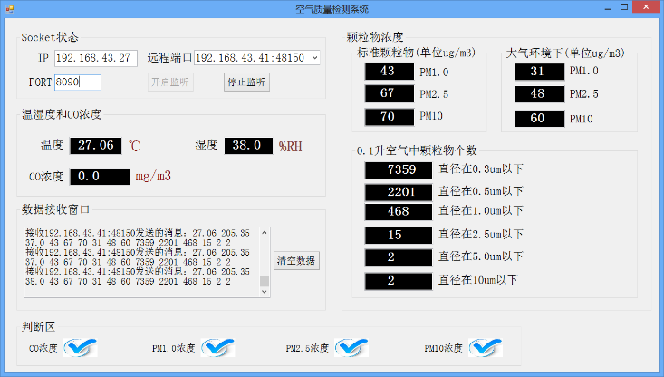
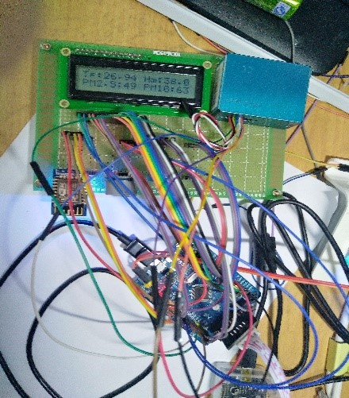

- 个人信息
- 邮箱：18328020385@163.com
- 户籍：广安
- 身高：170cm
- 家庭地址：四川省武胜县
- 求职意向
- 个人标签：年轻 自信 毅力 恒心 机会 自学
- 期望薪资：6-8K
- 职位：嵌入式软件工程师
- 工作类型：全职
- 自我评价：我是一名成都大学 2018 届通信工程专业毕业生，在校期间学习了电路原理、模拟电子电路、数字电子电路、信号与系统、数字信号处理、通信原理、计算机网络技术等必修课程，选修了单片机原理、计算机基础等课程。个人主要对单片机软件编程、计算机网络有浓厚兴趣，希望找到一个从事嵌入式软件相关的工作。
- 工作经验
- 工作时间：2018/4-2019/2
- 公司名称：成都卓源网络科技有限公司
- 公司规模：少于50人
- 职位：工程师助理
- 工作描述：
- 协助部门经理进行项目管理
- 协助部门经理进行项目方案的编写
- 协助部门经理编写合同、投标方案的技术部门
- 协助部门经理编写产品宣传手册、用户手册等
- 项目经验
- 项目名称：空气质量检测系统
- 项目周期：2017/12-2018/5
- 项目描述：本项目为基于 STM32 的空气质量检测系统，该系统能够实时检测温湿度、空气中的 CO 浓度以及环境颗粒物浓度，很实用于空气污染日益严重的今天。另外，该系统还具有 Wi-Fi 模块，可实时通过无线网络将数据传输到电脑上进行显示，当污染物浓度超过对人体有害的浓度时，系统将在上位机上进行报警。
- 责任描述：
- 嵌入式底层各个模块驱动编写，主要包括 DHT11 传感器驱动、DS18B20 传感器驱动、PMS5003 模块驱动、MQ-7 模块驱动、LCD1602 模块驱动、ESP8266 WiFi 模块驱动等；
- 上位机编写，使用C#程序设计语言进行套接字（Socket）编程。
- 实物展示：
上位机：
下位机：
- 教育经历
- 在校时间：2014/9-2018/6
- 学校名称：成都大学
- 学历/专业：本科/通信工程
- 专业描述：本专业学习了模拟电子电路、数字电子电路、通信技术、计算机网络技术、单片机原理等的专业知识。自学基本掌握了操作系统，数据结构的相关知识。本科期间学习了单片机编程、嵌入式编程、计算机网络等相关知识，对于嵌入式软件设计和计算机网络具有很大的兴趣。
- 在校情况
- 校内荣誉：
- 2016/11 校级三等奖学金（三等）
- 2016/8 四川省TI杯大学生电子设计竞赛三等奖
- 技能特长
证书
- 2017/12 大学英语六级
- 2017/6 大学英语四级
- 2016/9 全国计算机等级三级
- 2015/9 全国计算机等级二级